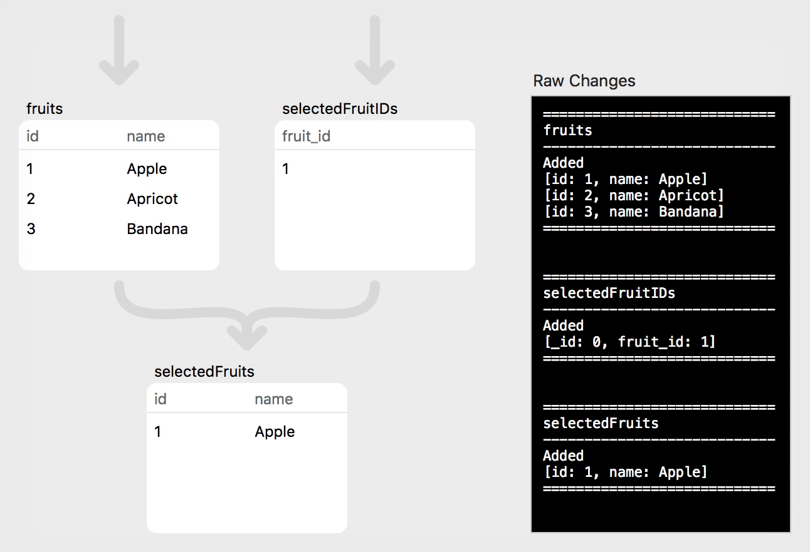
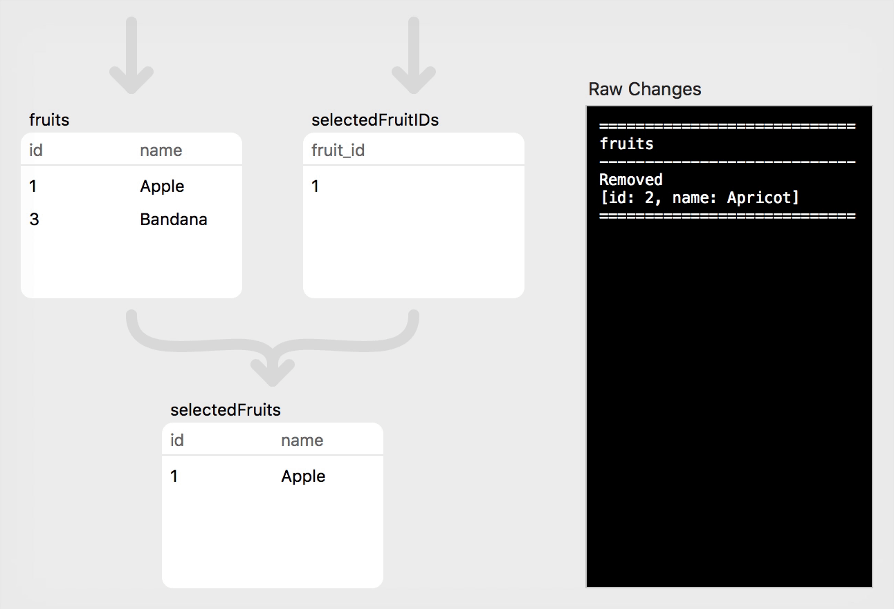
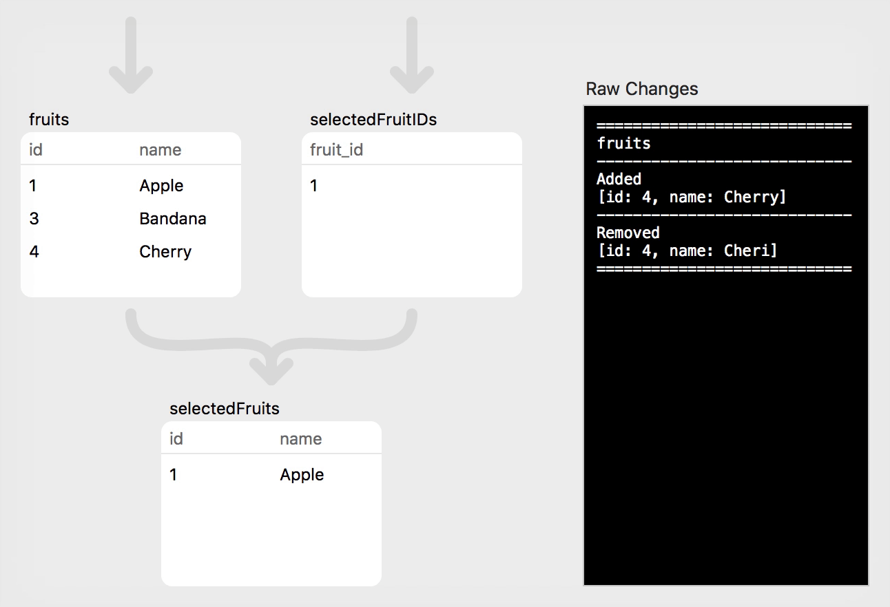
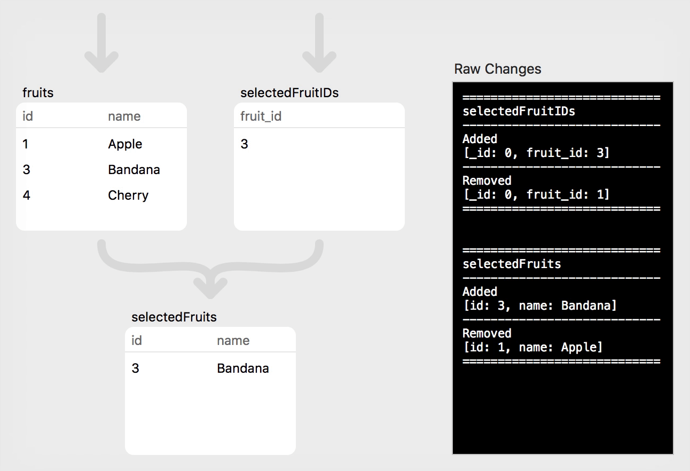
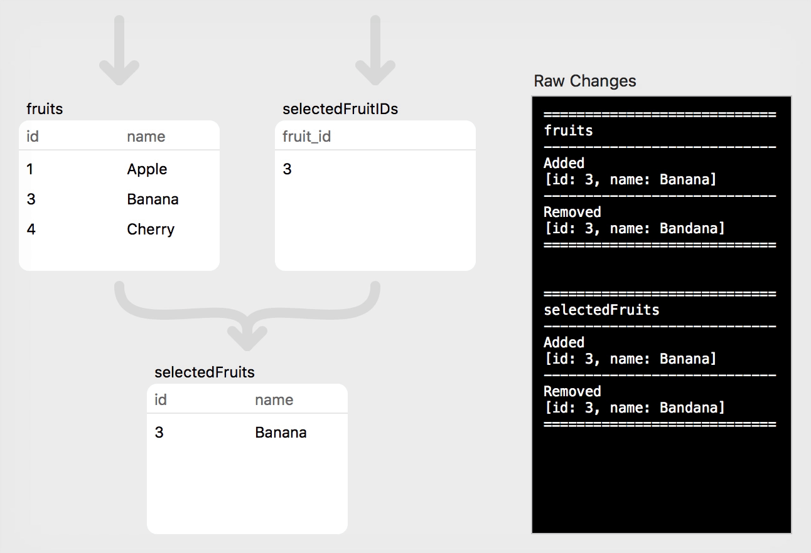

PLRelational: Observing Change
This is the second in a series of articles exploring the PLRelational framework. For a more general overview of PLRelational and friends, check out Reactive Relational Programming with PLRelational. To learn more about relational algebra and how it is used in PLRelational, head over to the first article in this series.
Before looking into all the goodies that PLRelational and PLRelationalBinding have to offer, it helps to first understand how the core Relation classes compute and deliver changes.
As a brief recap, PLRelational provides combinators that allow you to express a Relation through composition of other relations, and then register an observer that is notified whenever something changes. When a change is made to a lower-level Relation, each subsequent Relation interprets the changes reported by the one that came before it in the chain, producing a new set of changes, and so on.
To help illustrate this, we will set up a couple very simple "source" Relations and then use them to build up more interesting Relations through composition.
Step 0: Declaring Relations
First we will declare some Attributes for our two Relations using enums for quick-and-easy namespacing. It is possible to use a string literal in place of an Attribute but to avoid typos it's best to just declare an Attribute for each.
enum Fruit {
static let id = Attribute("id")
static let name = Attribute("name")
}
enum SelectedFruit {
static let _id = Attribute("_id")
static let fruitID = Attribute("fruit_id")
}
Now that we have our Attributes we can initialize our source Relations:
// Prepare the source relations
let memoryDB = MemoryTableDatabase()
let db = TransactionalDatabase(memoryDB)
func createRelation(_ name: String, _ scheme: Scheme) -> TransactionalRelation {
_ = memoryDB.createRelation(name, scheme: scheme)
return db[name]
}
// Each item in the `fruits` relation will have a unique identifier and a
// (possibly misspelled) name
fruits = createRelation(
"fruit",
[Fruit.id, Fruit.name])
// The `fruit_id` attribute in the `selectedFruitsIDs` relation acts as a
// foreign key, referring to a row from the `fruits` relation
selectedFruitIDs = createRelation(
"selected_fruit_id",
[SelectedFruit._id, SelectedFruit.fruitID])
We will also use the aforementioned combinators to create two higher-level Relations that will be used in our examples below:
// Join `fruits` with `selectedFruitIDs` to produce a new Relation that will
// contain our fruit(s) of interest. (In a real application we might use this
// setup to model the selection state for a list view, for example.)
selectedFruits = fruits.equijoin(selectedFruitIDs,
matching: [Fruit.id: SelectedFruit.fruitID])
// Project just the `name` Attribute to produce another Relation that will
// contain only a single string value (the selected fruit's name)
selectedFruitName = selectedFruits.project(Fruit.name)
Now that we've created some Relations we will demonstrate how data can be added and modified. For each of the following examples, we have a code block showing the changes that were initiated, followed by an animation showing how those changes flow through the relations. On the right side of each animation you can see the raw set of changes delivered to observers of each relation. (These animations were produced using the RelationChangeApp demo from the PLRelational repository; check out the source code of that example application if you'd like to see how things work in more detail.)
Step 1: Initial Data
Let's start by inserting a few Rows into our source relations:
// Step 1: Populate the empty relations
fruits.asyncAdd([Fruit.id: 1, Fruit.name: "Apple"])
fruits.asyncAdd([Fruit.id: 2, Fruit.name: "Apricot"])
fruits.asyncAdd([Fruit.id: 3, Fruit.name: "Bandana"])
selectedFruitIDs.asyncAdd([SelectedFruit._id: 0, SelectedFruit.fruitID: 1])

Click "Play" to watch the changes flow through the relations.
Note that multiple changes made to relations on the same runloop iteration are coalesced into a single logical transaction. The query planner and optimizer ensure that the changes are processed together, and observers will see a single batch of updates delivered.
There are a few different kinds of observers in PLRelational, but for the purposes of this article we will focus on just one: AsyncRelationChangeCoalescedObserver. When an observer of this type is registered with a Relation (by calling addAsyncObserver), the observer will receive a RowChange object that tells you the Rows that were added and removed as a result of all changes that were processed. In the example app that produced these animations, our observers simply pretty-print the RowChange contents, which is what gets displayed in the black box; for Step 1 this looks like the following:
============================
fruits
----------------------------
Added
[id: 1, name: Apple]
[id: 2, name: Apricot]
[id: 3, name: Bandana]
============================
============================
selectedFruitIDs
----------------------------
Added
[_id: 0, fruit_id: 1]
============================
============================
selectedFruits
----------------------------
Added
[id: 1, name: Apple]
============================
This first example was straightforward: three rows were added to the fruits relation, and one row was added to the selectedFruitIDs relation. In the app we also added an observer on the selectedFruits relation, which you recall was a join of the two source relations. Here we can see that a single row (for "Apple") was added as a result of the initial join, since Apple's id matches the fruit_id of the single row in selectedFruitIDs.
Step 2: Deletion
Next, we will delete a single row from the fruits relation:
// Step 2: Delete "Apricot"
fruits.asyncDelete(Fruit.id *== 2)

This change affected only the fruits relation, and its observer sees that a single row was removed. (Note that the observers for the other two relations may also be notified that a change happened somewhere, but the RowChange will be empty to indicate that this particular relation was unaffected. This is something of a quirk caused by a combination of the current observer API and the optimizer's implementation; both are works in progress and this behavior will likely improve with time.)
Step 3: Insertion
For the next step, we will add a single (misspelled) row to the fruits relation:
// Step 3: Insert "Cheri"
fruits.asyncAdd([Fruit.id: 4, Fruit.name: "Cheri"])
As with the previous step, this change only affected the fruits relation. The other two relations were unaffected.
Step 4: Simple Update
That covers the simple insertion and deletion cases. What if we instead want to update a particular value in one or more existing rows? For this we can turn to asyncUpdate, which takes a SelectExpression (to narrow the focus of the update) along with the set of values that will replace the existing ones:
// Step 4: Fix spelling of "Cherry" by updating the source relation
fruits.asyncUpdate(Fruit.id *== 4, newValues: [Fruit.name: "Cherry"])

When a Relation is updated, the RowChange does not include a third set of Rows similar to added and removed; instead, observers will see this as a "remove" (with the previous row content) along with an "add" (with the updated row content). This approach simplifies PLRelational internals while still allowing higher level code to identify an update as opposed to a pure insert or delete. In fact, the PLRelationalBinding framework includes a class called RelationChangeParts to help break down a relation change into those nice buckets.
Note that there are other ways to simplify and narrow the focus of an update (instead of explicitly updating a row by its unique identifier); we will see one such approach later in Step 6.
Brief aside: Why do many of these functions and classes include the word "async" you may wonder? Isn't PLRelational geared towards asynchronous processing by default? The answer is that in our earliest prototypes we only had support for synchronous mutation and fetching. Later we implemented the various asynchronous APIs (along with query optimization, etc) that worked alongside the original synchronous APIs, and that new naming stuck. At this time we encourage use of only the asynchronous APIs; we will most likely remove the synchronous ones, at which point we could drop "async" from those names.
Step 5: Forward-propagating Update
Now, suppose we want to make "Bandana" the selected fruit. This is as simple as performing an asyncUpdate on the single row in the selectedFruitIDs relation:
// Step 5: Mark "Bandana" as the selected fruit
selectedFruitIDs.asyncUpdate(true, newValues: [SelectedFruit.id: 3])

In this case, the fruits relation was unaffected, but the change in selectedFruitIDs has propagated to the join (selectedFruits) relation. Each relation will produce an add and a remove, indicating that the row is being updated.
Step 6: Reverse-propagating Update
Finally, let's fix the spelling of the selected fruit ("Banana"), but this time we will use a different technique. In Step 4 we updated the "Cheri" row by performing an asyncUpdate directly on the fruits relation. This time we will apply the update to our selectedFruitName relation. We use the asyncUpdateString convenience, which assumes a single-attribute relation (like selectedFruitName, which projects a single name attribute) and updates all rows (only one row in this case) with the new value:
// Step 6: Fix spelling of the selected fruit ("Banana") by applying
// the update to the higher-level relation (will automatically propagate
// back to the source relation)
selectedFruitName.asyncUpdateString("Banana")

This demonstrates a cool feature of PLRelational, where updates can be applied to a higher-level Relation (i.e., one formed by composition with the help of the core combinators); those changes will propagate through the tree and will ultimately be applied to the underlying source relation. In this case, we applied the update to our selectedFruitName relation, and PLRelational was smart enough to apply those changes back to the corresponding row in the underlying fruits relation.
This feature is especially handy when working at the UI level. For example, we can have a form-style user interface with a TextField that is bound to the selected employee's first name. The user can edit the TextField and those changes will be written back to the original employee table in an on-disk database. We didn't have to write code that keeps the selected employee ID in memory, or explicitly write to the employee table using that ID.
Go Forth and Explore
As mentioned above, the examples from this article are taken from the RelationChangeApp demo in the PLRelational repository. Using that macOS application, you can step through each example and follow the animated visualizations to see how changes flow through the system. The ViewModel class is where the example steps are defined. Feel free to modify the code and add your own steps to get a better feel for how things work!
Next Steps
In this article we showed different ways to change the contents of a Relation and what those changes look like to an observer. These are fundamental concepts in PLRelational, and it is important to understand these basics before we move on to explore the features they enable, especially those in the PLRelationalBinding layer. So far we've just scratched the surface in discussing what PLRelational has to offer. In upcoming articles we plan to deep-dive into how things work (efficiently) in the implementation of PLRelational and also explore what becomes possible when you structure your application with a reactive-relational mindset.
Need help? Plausible Labs offers consulting services for software engineering. If you'd like some professional assistance, whether with PLRelational or for something entirely different, consider us. More information can be found on our consulting page.
The Plausible Blog
Latest news and musings from the co-op.
Follow us: @plausiblelabs
Recent Articles
- PLCrashReporter Stewardship Moving to Microsoft September 12, 2019
- A New Home for VoodooPad December 14, 2017
- PLRelational: Query Optimization and Execution October 3, 2017
- Let's Build with PLRelational, Part 2 September 28, 2017
- Let's Build with PLRelational, Part 1 September 18, 2017